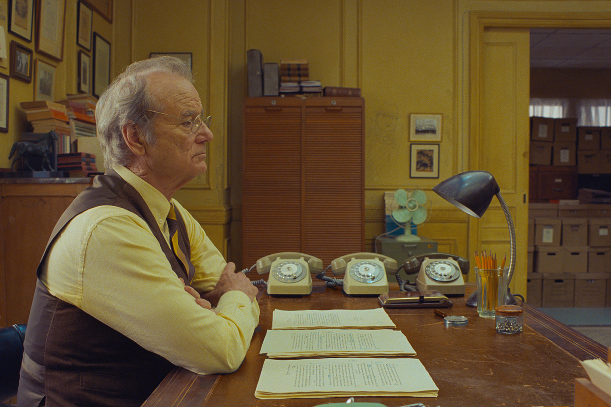
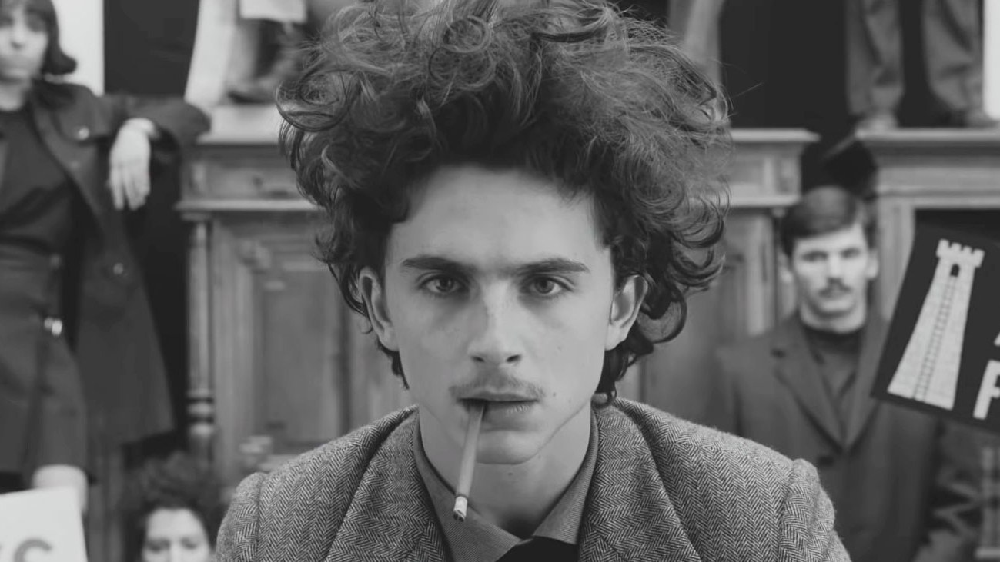

Працюючи над стрічкою «Французький вісник», режисер Вес Андерсон тримав в голові три складові. Він хотів зробити антологію, розповісти про журнал The New Yorker та зняти французький фільм. Ось що в нього вийшло
«Французький вісник» – десятий фільм Андерсона. Його події починаються з повідомлення про смерть головного редактора журналу «Французький вісник» — Артура Ховітцера-молодшого. Фільм є збіркою статей, що вийшли в останньому номері за життя Ховіцера. Оповідачами у кожній історії стають журналісти, які написали матеріали.
Перша новела — гід містом Енуї-сюр-Блазе, де відбуваються події фільму. Друга історія про засудженого за вбивство художника, чиї креативні сили пробуджує строга тюремна наглядачка. Третій репортаж описує студентський протест, що вилився у революцію. Четверта стаття розповідає про викрадення сина комісара злочинцями, знайти якого допомагає талановитий шеф-кухар.
Рекорд зі зборів серед фільмів Андерсона утримує «Готель Гранд Будапешт», який зібрав у прокаті $172,9 мільйонів. «Французький вісник» до 3 листопада зібрав $12,5 мільйонів, ставши, втім, найуспішнішим інди-фільмом епохи пандемії. З чого складається фільм і як він влаштований?
Зразок естетики та стилю Андерсона
У 2020 році засновник Інстаграм-акаунту Accidentally Wes Anderson Віллі Коваль випустив однойменний тревел-гід. До нього увійшли знімки локацій по всьому світу, що нагадують кадри фільмів Андерсона: симетричні, барвисті, повні деталей та ретро-естетики. Серед 200 фотографій у книзі зʼявився і знімок із України – вестибюль Національного художнього музею.
Гід став трибʼютом стилю фільмів Андерсона — яскравого, живого, вкрай деталізованого, по крихтах створеного з дрібниць і артефактів. Актор Джеффрі Райт, який зіграв в останній новелі «Французького вісника» журналіста Робака Райта, описує стиль Андерсона як «бродячий цирк». «Його фільми – це шоу, а кадр – авансцена, – додає Райт в інтервʼю The New York Times. — І це мені подобається. Приємно відірватися від гіперреалізму, до якого часто втягується кіно».
«Французький вісник» — квінтесенція авторського стилю Андерсона. Це стає ясно з першого кадру, де на срібному підносі, що обертається, сервірують каву і коктейлі для редакції журналу. Фільм повний деталей — у костюмах, інтерʼєрах, діалогах та акторському складі. Автор The New Yorker та кінокритик Річард Броді рекомендує побачити «Французький вісник» щонайменше двічі — і тоді ви можете бути впевненим у тому, що подивилися його повністю один раз.
Андерсон не дає глядачеві звикнути до кадру чи формату ні на мить. Режисер перемикається між кольоровими та чорно-білими кадрами, додає заголовки та нових оповідачів. Спогади героя перетворюються на театральну постановку чи лекцію від арткритика у виконанні Тільди Свінтон. Головний герой першої новели, художник Моузес Розенталер, сидить у вʼязниці. Щоб показати, як змінюється герой за час увʼязнення, Андерсон змінює прямо в кадрі юного Розенталера у виконанні Тоні Револорі на дорослого художника, якого зіграв Бенісіо Дель Торо. Револорі передає дель Торо номер увʼязненого і виходить із кадру.
Фільми Андерсона дуже точні та деталізовані. Але він залишає акторам простір для творчості, каже актор Боб Балабан. У «Французькому віснику» він зʼявляється у першому сюжеті у ролі Ніка, ділового партнера у фірмі Кадаціо. «Багато його кадрів зроблено камерою, що рухається; іноді обидві камери рухаються одночасно із рухом акторів. Це балет із хореографією, — пояснює Балабан. — Має статися неймовірна синхронність, тому що [Андерсон] шукає ідеальний варіант».
Приклад такого балету з хореографією у «Французькому віснику» — фінальні сцени першої новели, де відбувається бійка між увʼязненими та артспільнотою. Багато сцен у фільмі доводиться знімати знову і знову, але це не втомлює, каже Балабан — навпаки, у цьому є щось гіпнотичне та розслаблююче.
Як створюються локації світів Андерсона? За допомогою сет-дизайнера Адама Штокхаузена, який працював із режисером над створенням чотирьох фільмів. Стиль Андерсона формують не лише симетричні кадри, відтінки та розташування обʼєктів, а й особливі лінзи та рухи камери, каже Штокхаузен. Місто Енуї-сюр-Блазе, де розташована редакція газети «Французький вісник» — вигадана локація. Зйомки відбувалися в Ангулемі. Щоб надати кадрам потрібну ностальгічність та фантазійність, декоратор Рена ДеАнджело шукала реквізит у підвалах Ангулема та на барахолках французьких міст.
Працюючи над дизайном фільму, команда за завданням Андерсона переглянула кілька французьких стрічок — «Червона куля» Альбера Ламоріса, «Чотириста ударів» Франсуа Трюффо, «Сторонні» Жан-Люка Годара. Дизайнери вивчили колекцію вінтажних знімків Парижа, щоб створити настрій гарного, але брудного та недосконалого міста. Для кожної новели було створено окремий набір референсів — команда сет-дизайнерів ніби працювала не над одним, а над чотирма фільмами, каже ДеАнджело.
Трибʼют газетам та ностальгія
Вес Андерсон був шанувальником The New Yorker з підліткового віку, і «Французький вісник» став освідченням цього журналу. 2003 року режисер хотів придбати повний архів видання, але в The New Yorker йому відмовили — архів не продавався. Натомість Андерсон придбав набір томів журналу у Каліфорнійського університету і став хранителем колекції, яка належала авторці The New Yorker Ліліан Росс, яка померла у 2017 році. Режисер захоплений The New Yorker, його авторами та рутиною. «Французький вісник» — не точна копія журналу, але він багато в чому натхненний виданням.
Образ головного редактора «Вісника» Артура Ховітцера-молодшого — сплетіння характерів першого редактора The New Yorker Гарольда Росса та його наступника, Вільяма Шоуна. Персонаж Джеффрі Райта, журналіст Робак Райт, натхненний образом спортивного журналіста та автора The New Yorker Ей Джея Ліблінга та драматурга Теннессі Вільямса.
Френсіс МакДорманд, яка зіграла журналістку Люсінду Кременць, яка описує студентські протести, отримала від Андерсона завдання вивчити роботи письменниці Мейвіс Галлант. «Образ Кременць побудований на фотографіях Мейвіс Галлант, які мені дав Вес, на її знімках, де вона одночасно курить і друкує, і на спогадах про Ліліан Росс, з якою я провела час кілька років тому», — каже МакДорманд.
Захоплення Андерсона пресою вплинуло і на дизайн простору. Малюнки на стінах у редакції надихнуті ілюстраціями Джеймса Тербера, автора коміксів та сатиричних малюнків, якими було прикрашено офіс The New Yorker. Ньюсрум створювався за фотографіями кабінетів та робочих столів прототипів персонажів.